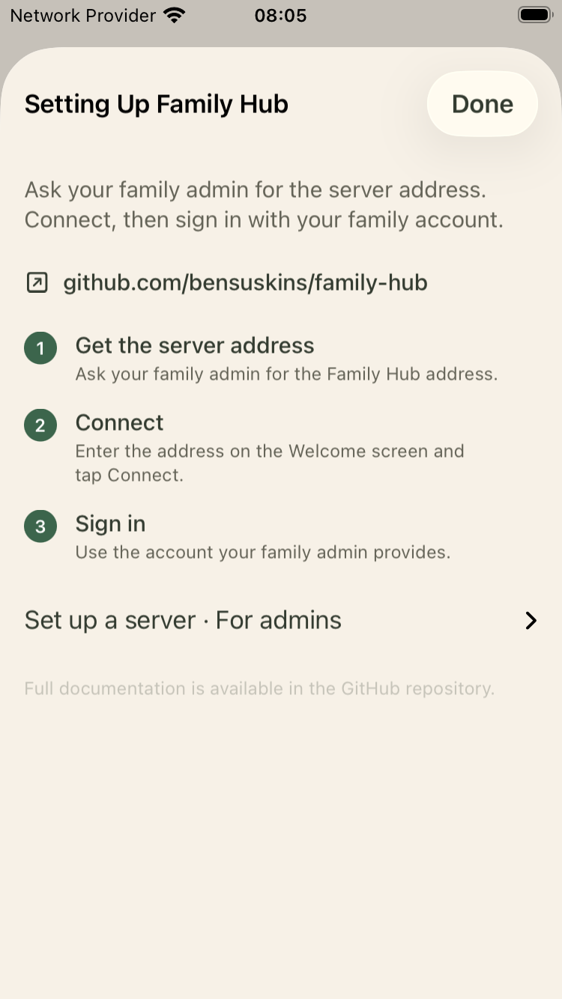
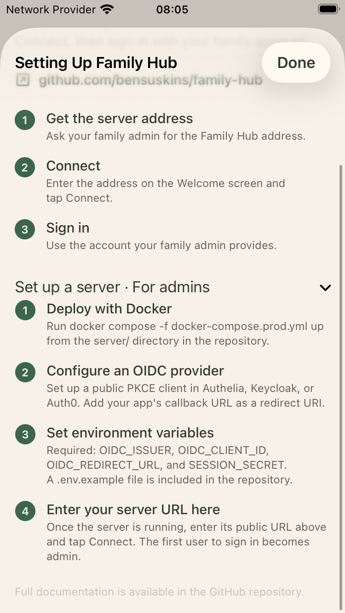
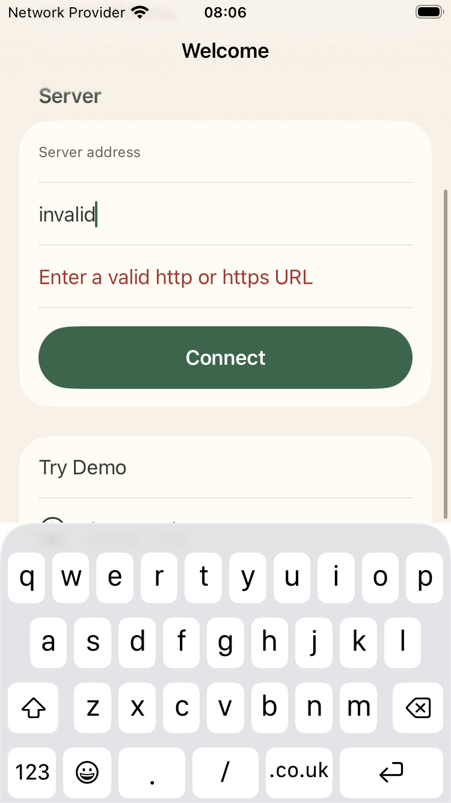
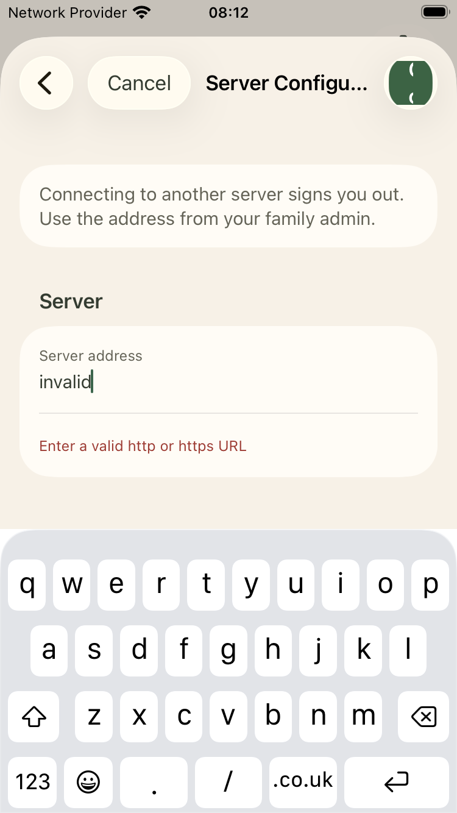
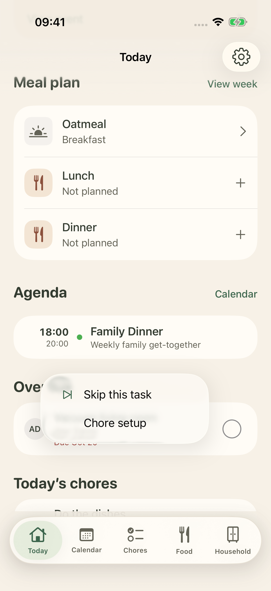
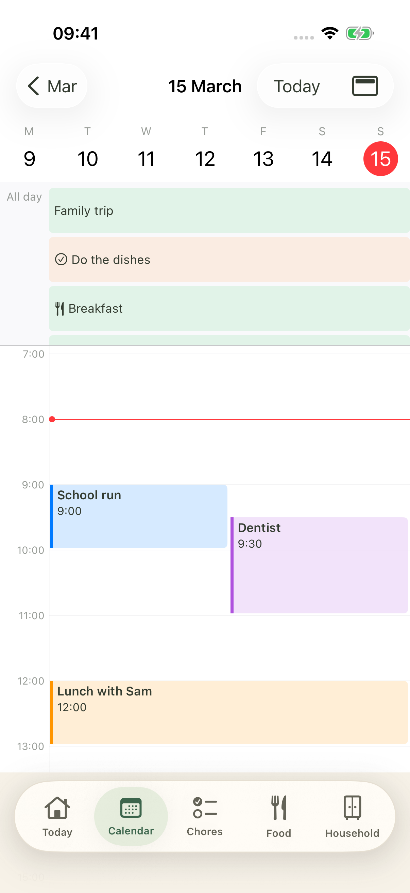
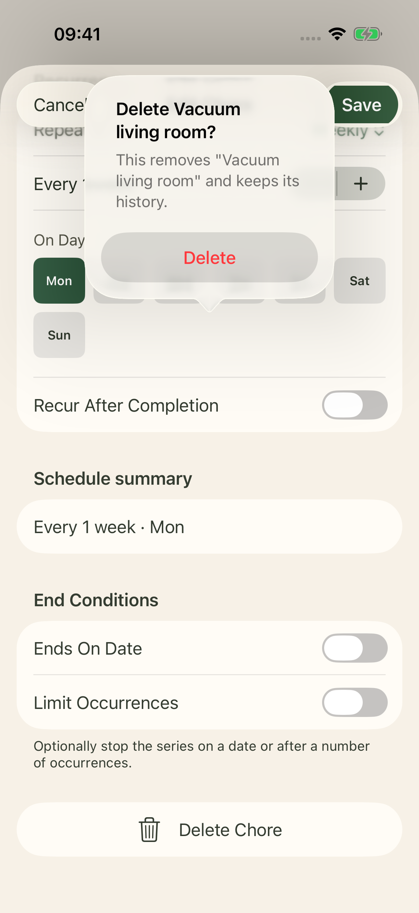
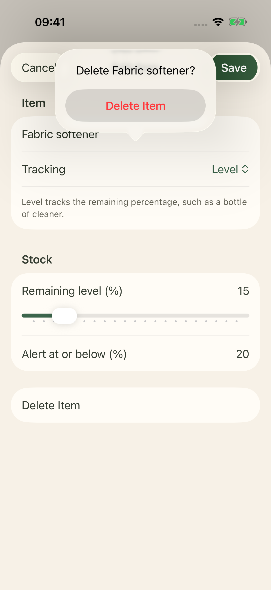
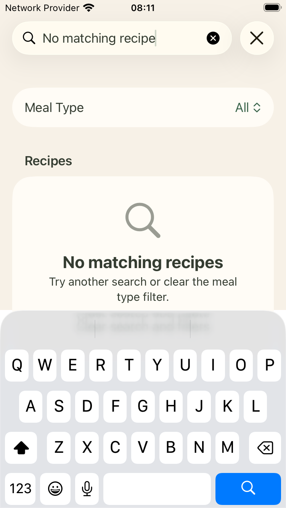

CapturedWelcome / server entry
Explain the family benefit. Ask the user to obtain the address from their family admin. Keep Try Demo secondary.
CapturedSetup help
Lead with three join steps. Keep server deployment in an admin section and retain the full guide.
Approved mockup Native · default · access-setup-help
Native · default · access-setup-help
Native · default · access-setup-help-bottom
CapturedInvalid server address
Keep the error beside a persistent label. Use a specific correction and retain the entered value.
Approved mockup Native · default · access-invalid-server
Native · default · access-invalid-server
Native · default · settings-server-validation
CapturedToday
Put a near departure first, then the meal plan, the agenda, and overdue and today’s chores. Keep weather compact and omit empty departure cards.
CapturedWeather detail
Keep the current conditions prominent. Use shorter hourly time labels. Retain all 24 hourly forecasts, weather advice, freshness, and Open-Meteo attribution.
CapturedEvent detail
Put date and location together. Put the departure immediately below them. Keep the full description below.
CapturedToday chore menu
Include the chore name and assignee. Explain Skip. Add a route to the chore setup.
Approved mockup Native · default · today-chore-actions
Native · default · today-chore-actions
Calendar keptCalendar: month and zoom
Keep the current Calendar design and interactions, as selected by the user. Only remove arrival-margin text. Earlier layout proposals are superseded.
Calendar keptCalendar: day and event overlap
Keep the current Calendar design and interactions, as selected by the user. Only remove arrival-margin text. Earlier layout proposals are superseded.
Native · calendar · calendar-day Native · calendar · calendar-day-overlap
Native · calendar · calendar-day-overlap
Calendar keptCalendar: week
Keep the current Calendar design and interactions, as selected by the user. Only remove arrival-margin text. Earlier layout proposals are superseded.
Native · calendar · calendar-week
Calendar keptCalendar: year
Keep the current Calendar design and interactions, as selected by the user. Only remove arrival-margin text. Earlier layout proposals are superseded.
Native · calendar · calendar-year
Calendar keptCalendar: accessibility text
Keep the current Calendar design and interactions, as selected by the user. Only remove arrival-margin text. Earlier layout proposals are superseded.
CapturedChore setup list
Rename the tab Chores. Move Show inactive below the active rules. Keep completion on Today and add a direct Today link.
CapturedChore setup detail and history
Put the current task first. Replace Home with Today and make the instruction a link. Keep history and deletion.
CapturedNew chore
Use “Due date” and “Due time” labels. Show a repeat summary and keep advanced conditions in a repeat section.
CapturedEdit chore and repeat rule
Keep the current-task explanation. Use full-size weekday controls and a readable repeat summary.
CapturedDeletion confirmations
Name the item in the title. Explain the effect, including area contents or retained chore history.
Approved mockup Native · default · tasks-delete-confirmation
Native · default · tasks-delete-confirmation
Native · default · household-item-delete-confirmation
CapturedFood / daily meal plan
Use the chosen Food overview with Meal plan and Recipes navigation rows, followed by today’s meals. Open each destination with a normal Back action.
CapturedFull week meal plan
Keep Friday–Thursday boundaries. Use shorter empty rows and retain all breakfast, lunch, and dinner actions.
CapturedAdd meal / recipe selection
Keep Save visible. State “Choose a recipe or save the meal name.” Show a checkmark for the selected recipe.
CapturedEdit meal
Remove the link warning. Typing filters recipes without changing the current link. Selecting a result changes the recipe. Use name only explicitly selects a custom meal. Save applies the choice.
CapturedRecipe list
Keep search accessible from entry. Label prep and cook times. Expose Recipes at the top of Food.
CapturedRecipe search: no results
Add Clear search and explain that the meal filter can also hide matches.
Approved mockup Native · default · food-recipes-no-results
Native · default · food-recipes-no-results
CapturedRecipe detail, ingredient actions, and method
Add Start cooking near the title. Keep each ingredient’s quantity, check state, and independent add-to-shopping action.
CapturedRecipe action menu
Keep the menu. Add a prominent Start cooking button on the detail screen.
Approved mockup Native · default · food-recipe-actions
Native · default · food-recipe-actions
CapturedNew recipe
Put Title first. Reduce Photo to an optional row. Keep every content section and its add/remove actions.
Approved mockup Native · default · food-recipe-create
Native · default · food-recipe-create-details
Native · large · recipe-form
Native · default · food-recipe-create
Native · default · food-recipe-create-details
Native · large · recipe-form
CapturedEdit recipe
Use the same title-first structure as New recipe. Let ingredient fields expand at large text sizes. Keep the photo, source, groups, and step controls.
Approved mockup Native · default · food-recipe-edit
Native · default · food-recipe-edit-details
Native · default · food-recipe-edit
Native · default · food-recipe-edit-details
CapturedCook mode: ingredients
Show Before you start, then Start step 1. Count only cooking steps in the step progress.
Approved mockup Native · default · food-cook-ingredients
Native · default · variant-cook-ingredients
Native · large · cook-ingredients
Native · solid · variant-cook-ingredients
Native · default · food-cook-ingredients
Native · default · variant-cook-ingredients
Native · large · cook-ingredients
Native · solid · variant-cook-ingredients
CapturedCook mode: method step
Use one step count. Add Previous and Next step labels. Keep swipe navigation as an additional path.
Approved mockup Native · default · food-cook-step
Native · default · variant-cook-step
Native · large-fixed · large-cook-actions
Native · large · cook-step
Native · default · food-cook-step
Native · default · variant-cook-step
Native · large-fixed · large-cook-actions
Native · large · cook-step
CapturedCook mode: final step
Use a full-width Finish cooking button and retain Previous step. Keep both labels readable at maximum text size.
Approved mockup Native · default · food-cook-final-step
Native · default · food-cook-final-step
CapturedShopping list and low-stock suggestions
Use the chosen Household overview with Shopping list and Inventory navigation rows, followed by low-stock items. Keep inline rename and five-second purchase Undo in Shopping list.
Approved mockup Native · default · household-overview
Native · default · household-shopping
Native · default · household-overview
Native · default · household-shopping Native · large · household-overview
Native · solid · variant-household
Native · large · household-overview
Native · solid · variant-household
CapturedShopping item menu
Rename activates an inline field in the existing row. Delete keeps its confirmation. Keep purchase as a separate check action.
Approved mockup
Native · default · household-shopping-actions
CapturedRename shopping item
Replace the rename sheet with inline text entry. Done saves a non-empty name. Cancel keeps the original name. Keep failed edits in place with an error.
Approved mockup Native · default · household-shopping-rename
Native · default · household-shopping-rename
CapturedPurchase feedback and Undo
Remove the Purchased section and its clear action. Keep the checked row in place with Undo for five seconds, then hide it. Undo restores the unchecked state.
Approved mockup Native · default · household-shopping-pending
Native · default · household-shopping-undone
Native · default · household-shopping-pending
Native · default · household-shopping-undone
CapturedRestock after purchase
Keep stock updates optional through Inventory. Do not interrupt a shopping check with this form. Retain the current stock, a cancel action, and the new-level label.
Approved mockup Native · stock · inventory-stock-updated
Native · default · household-item-edit-level
Native · stock · inventory-stock-updated
Native · default · household-item-edit-level
CapturedInventory overview
Place Areas first and Running low below. Keep every low-stock item and its shopping action.
Approved mockup Native · default · household-inventory
Native · large-fixed · large-inventory-rows
Native · large · inventory
Native · default · household-inventory
Native · large-fixed · large-inventory-rows
Native · large · inventory
CapturedInventory area
Use a clear edit affordance, explicit stock values, and distinct shopping controls. Retain All and Running low filters.
Approved mockup Native · stock · inventory-stock-updated
Native · default · household-area
Native · large · area-detail
Native · stock · inventory-stock-updated
Native · default · household-area
Native · large · area-detail
CapturedInventory area menu
Add a visible area action menu. Keep long press and swipe as shortcuts.
Approved mockup
Native · default · household-area-actions
CapturedNew inventory area
Keep the form. Add one short description of what an area represents.
Approved mockup Native · default · household-area-create
Native · large · area-form
Native · default · household-area-create
Native · large · area-form
CapturedEdit inventory area
Retain this form and use the same field order as New area.
Approved mockup Native · default · household-area-edit
Native · default · household-area-edit
CapturedNew inventory item: count
Explain Count and Level. Label the threshold explicitly and retain precise numeric input.
Approved mockup Native · default · household-item-create-count
Native · default · household-item-create-stock
Native · large · item-form
Native · default · household-item-create-count
Native · default · household-item-create-stock
Native · large · item-form
CapturedEdit inventory item: level
Use Remaining level and Alert at or below. Keep the percentage, slider, Save, and delete confirmation.
Approved mockup Native · default · household-item-edit-level
Native · default · household-item-edit-level
CapturedSettings and profile
Use Settings for the entry label. Separate This iPhone and Family administration. Retain every existing settings destination.
Approved mockup Native · default · settings-profile
Native · default · variant-settings
Native · large · settings
Native · solid · variant-settings
Native · default · settings-profile
Native · default · variant-settings
Native · large · settings
Native · solid · variant-settings
CapturedSystem photo picker
No picker redesign. Preserve upload feedback and retry errors in the profile.
Native · default · settings-photo-picker
CapturedServer configuration
State that connecting to another server signs the user out. Keep the address and error inline.
Approved mockup Native · default · settings-server-configuration
Native · default · settings-server-configuration
CapturedChore reminders and device permission
Group This iPhone and Family reminder schedule. Explain demo limitations and unavailable server push support.
Approved mockup Native · default · settings-reminders
Native · default · settings-reminders-bottom
Native · default · settings-reminders
Native · default · settings-reminders-bottom Native · solid · variant-reminders
Native · solid · variant-reminders
CapturedFamily broadcast: compose
Rename the screen Family message. Keep the 500-character limit and lock-screen explanation. Preserve the message after a failed send.
Approved mockup Native · default · settings-broadcast
Native · default · settings-broadcast-keyboard
Native · default · settings-broadcast
Native · default · settings-broadcast-keyboard
CapturedFamily broadcast: result
Lead with No available iPhones for the zero-device case. Move focus to the result. Retain the message and link to notification setup.
Approved mockup Native · default · settings-broadcast-result
Native · default · settings-broadcast-result
CapturedHome information and location
Use Home location. Explain weather, departures, and arrival margin. Keep coordinates available and keep confirm-before-save.
Approved mockup Native · default · settings-home-info
Native · default · settings-home-info-bottom
Native · large · home-info
Native · default · settings-home-info
Native · default · settings-home-info-bottom
Native · large · home-info
CapturedFamily name
Add a persistent Family name label. Retain the explanation and Save behavior.
Approved mockup Native · default · settings-family-name
Native · default · settings-family-name-keyboard
Native · large · family-name
Native · default · settings-family-name
Native · default · settings-family-name-keyboard
Native · large · family-name
CapturedFamily members and role actions
Open role details from the member row. Explain Member and Admin. Confirm a change and retain the self-protection rule.
Approved mockup Native · default · settings-family-members
Native · default · settings-member-role
Native · large · members
Native · default · settings-family-members
Native · default · settings-member-role
Native · large · members
CapturedCategory list and actions
Keep the native list. Add a chore-focused explanation and a visible row action. Correct the demo category examples.
Approved mockup Native · default · settings-categories
Native · default · settings-category-actions
Native · large · categories
Native · default · settings-categories
Native · default · settings-category-actions
Native · large · categories
CapturedNew category
Keep the form. Use a persistent Category name label.
Approved mockup Native · default · settings-category-create
Native · default · settings-category-create
CapturedRename category
Add a short family-wide effect explanation. Keep deletion separate.
Approved mockup Native · default · settings-category-rename
Native · default · settings-category-rename
CapturedAPI token list and empty state
Explain that tokens connect other apps and act like passwords. Keep the token list in family administration.
Approved mockup Native · default · settings-tokens
Native · default · settings-tokens-populated
Native · large · tokens
Native · default · settings-tokens
Native · default · settings-tokens-populated
Native · large · tokens
CapturedCreate API token
Use a clear token name label, Create token, and a one-time reveal notice.
Approved mockup Native · default · settings-token-create
Native · large · token-form
Native · default · settings-token-create
Native · large · token-form
CapturedToken created and copied
Retain the one-time reveal. Change the copy label briefly to Copied and announce the result.
Approved mockup Native · default · settings-token-created
Native · default · settings-token-copied
Native · large · token-created
Native · default · settings-token-created
Native · default · settings-token-copied
Native · large · token-created
Calendar keptCalendar display menu
Keep the current Calendar design and interactions, as selected by the user. Only remove arrival-margin text. Earlier layout proposals are superseded.
Native · default · calendar-view-menu
CapturedChore recurrence variants
Retain all recurrence variants. Add a schedule summary and plain labels.
Approved mockup Native · default · tasks-repeat-menu
Native · default · tasks-repeat-monthly
Native · default · tasks-repeat-menu
Native · default · tasks-repeat-monthly
CapturedEdit inventory item: count
Keep the stepper and add precise numeric entry. Retain unit and threshold.
Approved mockup Native · default · household-item-edit-count
Native · default · household-item-edit-count
CapturedInventory area: empty
Use a clear empty-state message and retain Add item. No broader redesign is needed.
Approved mockup Native · default · household-area-empty
Native · default · household-area-empty